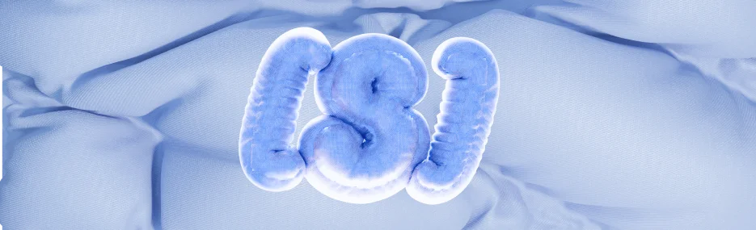
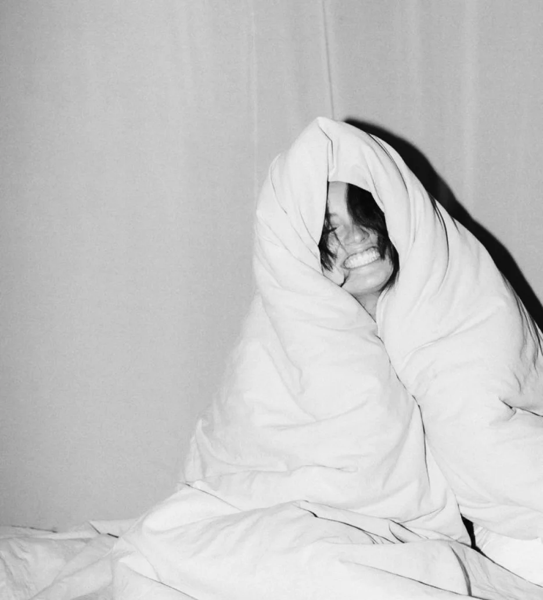
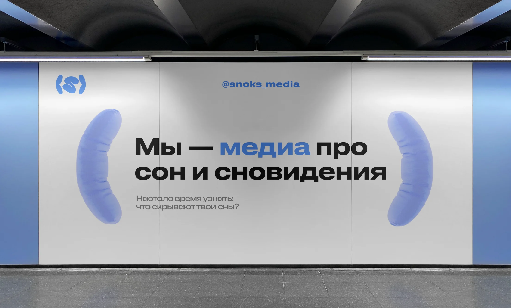
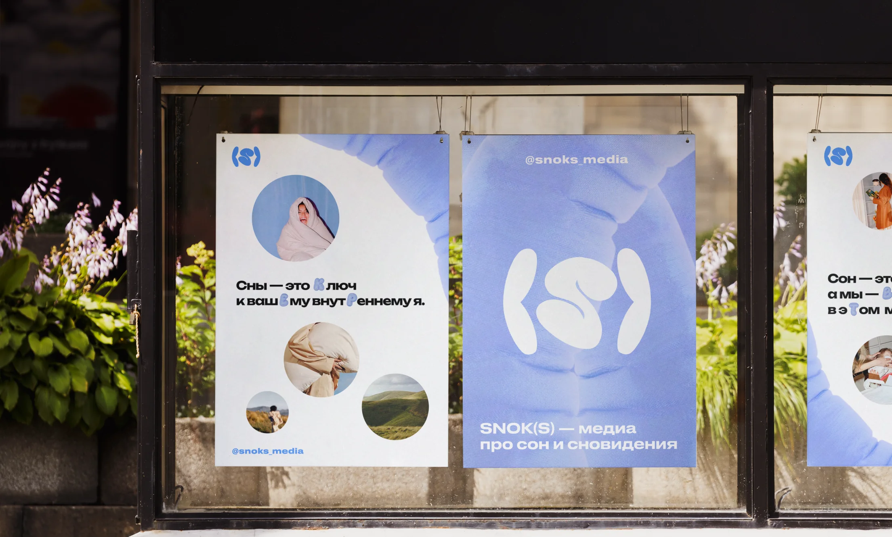
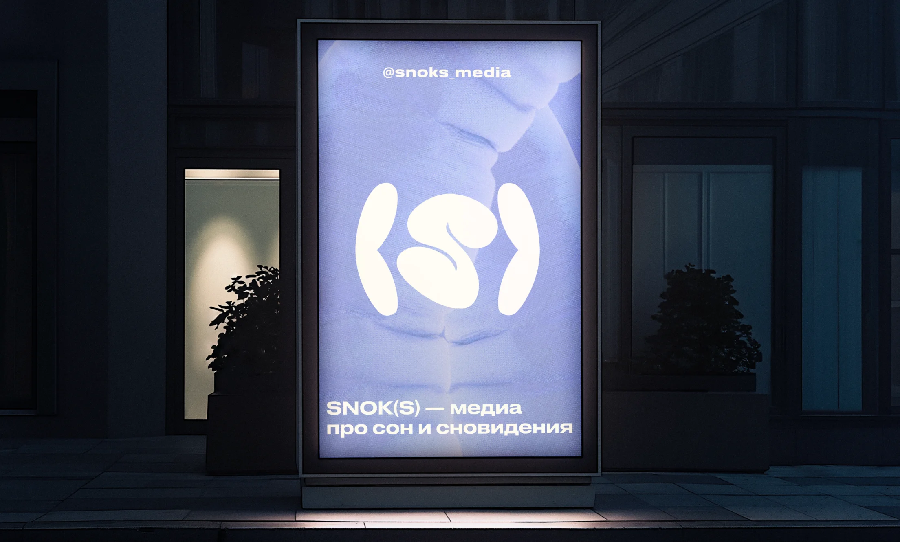
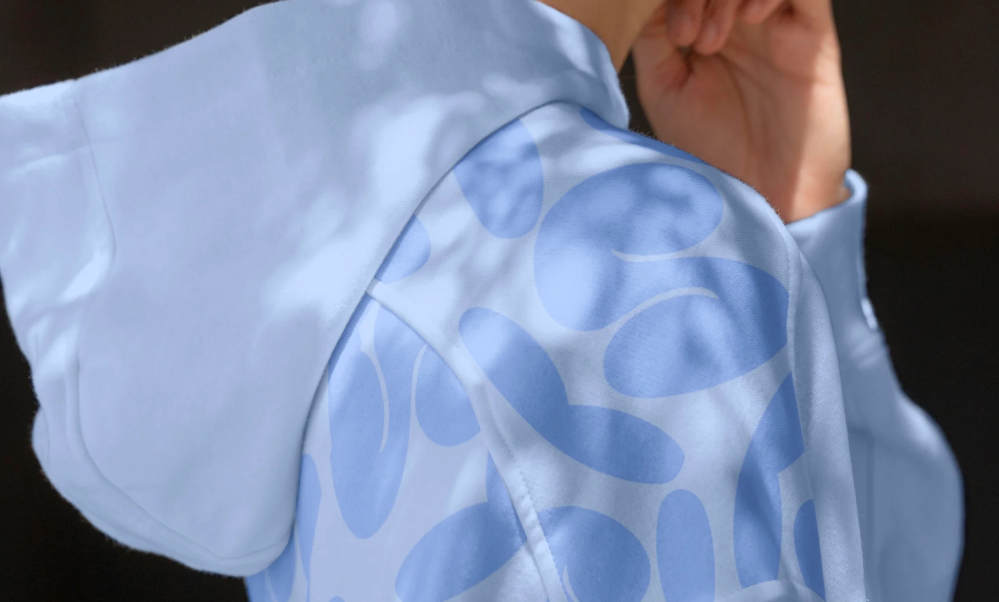
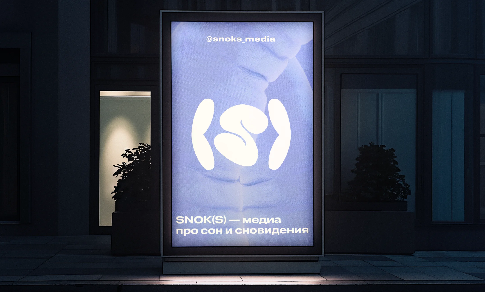
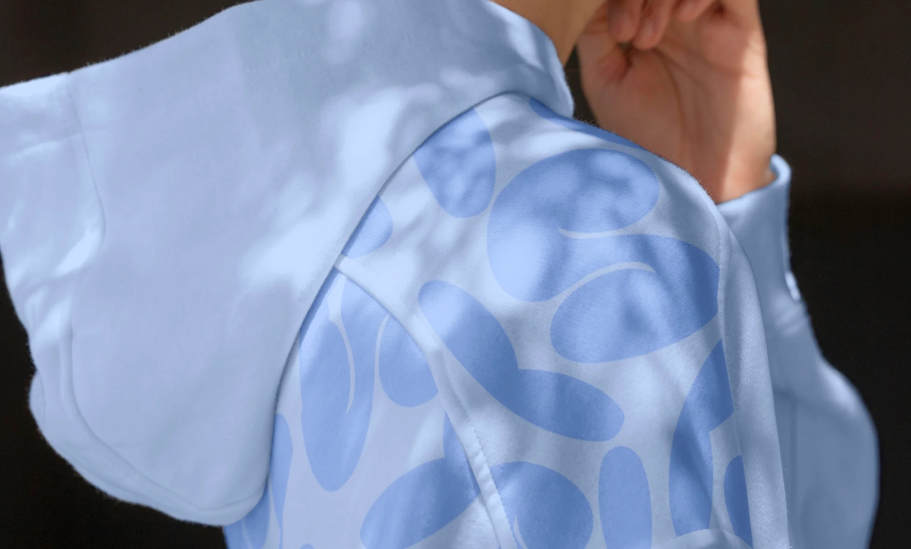

стайлгайд

Во сне происходит больше, чем ты
думаешь. Пока твоё тело отдыхает,
сновидения раскрывают тайны
твоего подсознания.
О SNOK(S)
Кто мы?
Медиа про сон и сновидения,
помогающее лучше узнать себя.
Миссия
Создать пространство
для комфортного сна
и ярких сновидений.
Суть
Соединение сонника, статей,
интерактивных элементов
в виде тестов и викторин.
Характер
Заботливый, искренний,
спокойный, понимающий,
образованный.
Ценности
Осознанность, вдохновение,
гармония, саморазвитие,
восстановление.
Tone of voice
Дружелюбный и доступный.
Мы говорим как с другом,
упрощая сложные вещи.
Цвета
В нашу цветовую палитру
входят три цвета: угольный,
дымчато-белый и небесный.
Для добавления лёгкости,
небесный цвет зачастую
осветляется в графике.
угольный
#232323
Небесный
#7DA6FF
Дымчато-белый
#F2F1F1
Осветлённый небесный
#B7CEFF
Сочетания
Основные сочетания цветов
представлены ниже. Вариантов
может быть больше, но для нас
главное, чтобы цвета были
констрастными.
При этом, мы не стремимся
к излишнему контрасту.
Мы придерживаемся
принципа сдержанности
в цветовых сочетаниях,
чтобы не перегружать
читателей.
Можно:
1
Нельзя:
Логотип
Наш логотип представляет
собой букву S из названия
в скобках, где скобки служат
метафорой подушек —
символа сна и отдыха.
Существует два варианта
логотипа: векторный в трёх
основных цветах и 3д
в одном цвете.

Векторный логотип
используется во всех случаях,
кроме веба. Он подходит для
печатных материалов,
рекламы и другой оффлайн-
продукции.
3д логотип, напротив,
используется исключительно
в вебе.
Ограничения
Нельзя:

Деформировать логотип
Нельзя:

Использовать 3д версию
логотипа на объёмных фонах
Перекрашивать логотип
в не фирменный цвет
Менять расстояние между
элементами в логотипе
Типографика
Мы используем два гротеска
и выравнивание по левому
краю или центру для
обеспечения лёгкой
читаемости.
Шрифты не перегружают
дизайн и сохраняют текст
чётким на всех носителях.
Заголовки и подзаголовки
Druk Text Wide Cyr
Аа Бб Вв Гг Дд Ее Ёё Жж Зз
Ии Йй Кк Лл Мм Нн Оо Пп
Рр Сс Тт Уу Фф Хх Цц Чч
Шш Щщ Ъъ Ыы Ьь Ээ Юю
Яя
Наборный текст
Druk Text Wide Cyr
Аа Бб Вв Гг Дд Ее Ёё Жж Зз
Ии Йй Кк Лл Мм Нн Оо Пп
Рр Сс Тт Уу Фф Хх Цц Чч
Шш Щщ Ъъ Ыы Ьь Ээ Юю
Яя
Графика
За основу в графике взяты
3д элементы из текстуры
ткани. Мы стремимся
добавлять глубину, мягкостьи
тактильность в дизайн для
создания атмосферы уюта.
Важно, что элементы графики
почти никогда не доминируют
в дизайне. Они используются
для дополнения основного
контента.
Также используются 3д
фоны, которые зачастую
выполняют роль подложек
для текстовых элементов.
Фотостиль
Мы используем яркие
отографии, посвящённые
тематике сна и сновидений.
Также все фотографии
имеют закруглённые углы.
Яркость в данном контексте
не означает использование
кричащих или агрессивных
цветов. Напротив, в нашем
случае это использование
насыщенных, но при этом
достаточно мягких оттенков.

Фотографии часто включают
элементы, ассоциирующиеся
с комфортом и отдыхом,
например, мягкие текстуры,
уютные интерьеры,
природные сцены.
Ограничения
Нельзя:

Сильно увеличивать
контраст и насыщенность
Нельзя:
Использовать черно-
белые фотографии
Нельзя:

Использовать мрачные
фотографии
Сетка
Мы используем сетку в 12 колонок
в десктопной версии и 6 колонок
в мобильной с отступами в 20
пикселей между колонками.
Носители
 
 


